An explainable lighting-consistency audit for edited photographs, motivated by the review of damage photos in insurance claims. This report explains the concept, the problem, the method in full, the interactive viewer, every evaluation (including what failed), and how to present the work.
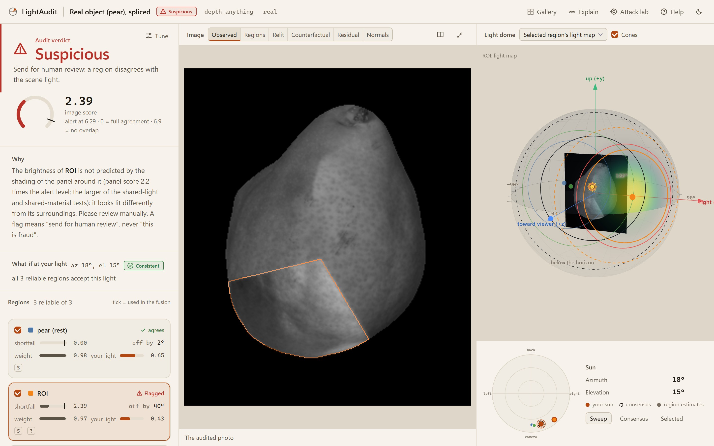
data/results/ and from BUILD_LOG.md; nothing is estimated for this report.
The problem. Insurance claims are increasingly settled from photographs, and photographs are easy to edit: a dent can be pasted onto a car door, or a damaged car can be placed into another scene. Colour and brightness are easy to match, so the edit passes the eye. Pixel-level forgery detectors can flag an image, but a claims reviewer needs a reason they can check.
The idea. Every surface in a photo records the direction it was lit from, in its shading, its highlights and its outline. In an honest photo taken under one dominant light (the sun), a single light direction explains every surface. A pasted part keeps the light of the photo it came from. LightAudit estimates, for every region of the photo, which light directions could explain it, finds the light most regions agree on, and flags the region that does not fit. When the photo carries too little lighting evidence (an overcast sky, two lights) it says so instead of guessing.
What was built. A Python pipeline (segmentation, surface normals from pretrained networks, per-region light maps on a sphere of 8,192 directions, a leave-one-out consensus test, conformal calibration of the alarm level), a dedicated check for a marked area such as a dent, a synthetic ray-marched test-scene generator, an attack lab that attacks our own detector, and an interactive WebGL viewer (3D light dome, live relighting, a sky map to move the sun, step-by-step explanations).
What it does not do, measured. Deciding whether a whole object was pasted into a real indoor scene is at chance (AUC 0.49–0.59), because predicted surface shape is too rough on flat, indoor surfaces. A forger who re-renders the pasted object under the scene's light passes, and Poisson blending lowers detection of pasted areas from 38.5% to 4.8%. So lighting evidence is necessary, not sufficient: one strong, explainable check among several. A flag always means "send for human review", never "this is fraud".
Motor insurers increasingly accept photos from customers instead of sending an assessor. That makes claims faster, but it also makes it cheap to inflate them: an old dent can be copied onto a new photo, damage from one car can be pasted onto another, or a car photographed elsewhere can be placed into the claimed location. Modern editing tools harmonise colour and brightness automatically, so the pasted part blends in at a glance.
For a matte (Lambertian) surface lit by a distant light, the brightness of a point depends on the angle between its surface
normal n and the direction to the light l:
Y = albedo · E · max(0, n · l) + ambient (clamped-cosine, Lambert's law)
Rendering computes Y from n and l. LightAudit runs this backwards: given the observed brightness
Y and an estimate of n, which l explains it? This is the inverse-rendering problem from computer graphics,
applied region by region. Real cameras add an unknown tone curve (gamma, HDR tone mapping), which is why a region's brightness is
modelled up to an unknown monotone function.
| Work | Idea | Relation to LightAudit |
|---|---|---|
| Johnson & Farid 2005, 2007 | Estimate a 2-D light direction from occluding contours of objects; compare across objects | Our silhouette cue (C3) is this idea on 3-D normals |
| Kee & Farid 2010 | 3-D lighting environment from faces (fitted 3-D face model, spherical harmonics) | Same consistency principle; we use predicted normals for any surface instead of faces |
| Kee, O'Brien & Farid 2013, 2014 | Cast shadows and attached shading as linear constraints on the light; infeasible = forged | Our shadow-pair cue (C4) and the new shadow-consistency test; our rank cue is a half-space voting relative of their constraints |
| Riess & Angelopoulou 2010; de Carvalho et al. 2013 | Illuminant colour maps; inconsistent light colour | Tried (section 11): no signal on our real benchmark |
| Lalonde, Efros & Narasimhan 2009 | Sun direction from sky, shadows and shading | Multi-cue fusion idea |
| Han 1987 | Maximum-rank-correlation estimator | Basis of our original rank shading cue |
| Careaga & Aksoy 2023/24 | Learned intrinsic decomposition (paint vs shading) | Compared with our guarded Retinex (section 11): worse for this task |
| TruFor 2023 | Learned noise-fingerprint forgery detector | Complementary; recommended as a second opinion |
What is new here is the combination: per-region light posteriors on a full sphere with calibrated uncertainty, a leave-one-out consensus test with a conformal alarm level, explicit abstention, a dedicated marked-area check that resists colour matching, an attack lab that measures our own weaknesses, and an interactive 3-D explanation.
Hypothesis under test: one distant light (plus smooth ambient light) explains the shading of every reliable region of the photo.
| Verdict | When | Recommended action |
|---|---|---|
| CONSISTENT | One light explains every reliable region | Normal processing |
| SUSPICIOUS | A region disagrees with the light the others share | Send for human review |
| INSUFFICIENT | Fewer than 3 reliable regions, a broad consensus, or soft (overcast) light | Request a better photo |
| CONFLICT | The reference regions disagree among themselves (e.g. two lights) | Human review, no automatic decision |
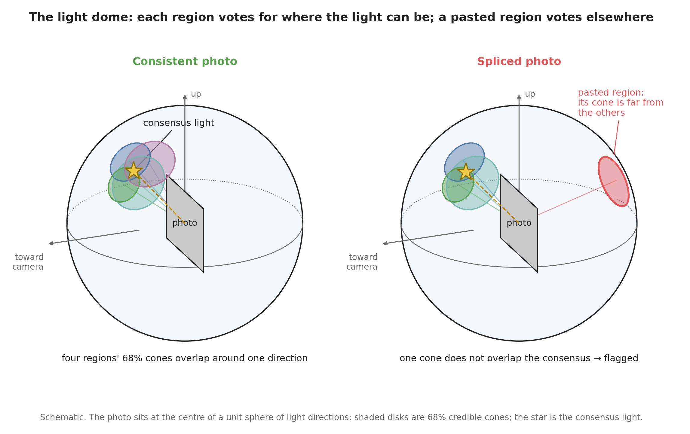
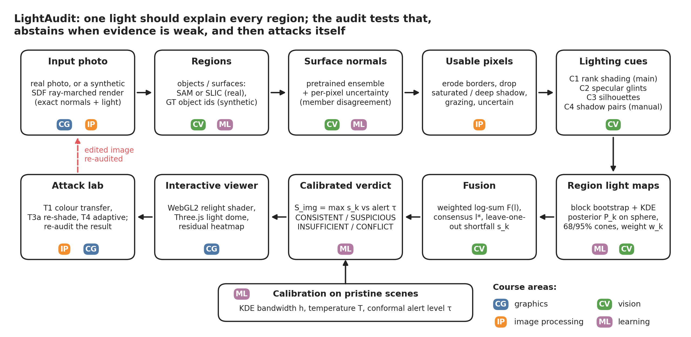
| Component | Where | What it does |
|---|---|---|
| Regions | lightaudit/regions.py | SAM segmentation on real photos, ground-truth objects on synthetic scenes; a marked area (ROI) plus a ring around it in panel mode |
| Surface normals | lightaudit/normals.py | Pretrained DSINE and Depth Anything, axis-convention checks, ensemble uncertainty |
| Cues | lightaudit/cues/ | C1 shading (least squares; rank baseline), C2 specular glints, C3 silhouette, C4 cast-shadow pairs |
| Region posterior | lightaudit/posterior.py | Block bootstrap + kernel density on the sphere, credible cones |
| Reliability | lightaudit/reliability.py | Five factors, geometric mean, a reason when a region is unreliable |
| Fusion and verdict | lightaudit/fusion.py | Log-linear consensus, leave-one-out shortfall, verdict logic, soft-light and shadow-level checks |
| Panel (dent) check | lightaudit/residual.py | Shared-light and shared-material tests after guarded Retinex |
| Calibration | lightaudit/calibrate.py | Posterior bandwidth and temperature; split-conformal alarm levels |
| Synthetic scenes | lightaudit/synth/ | NumPy signed-distance ray marcher with sun, sky, soft shadows, Blinn-Phong, camera pipeline |
| Attacks | lightaudit/attacks.py | Colour transfer, physics re-shade, adaptive white-box attack |
| Bundles and server | bundle.py, server.py, cli.py | Writes audit results for the viewer; FastAPI upload-and-audit |
| Viewer | viewer/ | three.js light dome, WebGL2 relighting, sky map, attack lab, explanations; fusion mirrored in JavaScript |
| Evaluation | eval/ | Synthetic suite E1–E10, real benchmarks (MIT Multi-Illumination, MIT Intrinsic Images), stress tests |
Size: 65 automated Python tests and 506 browser/Python parity checks (the verdict logic is implemented twice, in Python and in JavaScript, and checked to agree on shared test vectors).
Camera space: +x right, +y up, +z toward the viewer. A pinhole camera with a 60° horizontal field of view
maps pixel (u, v) to a ray. Every light map lives on one equirectangular grid of 128 azimuths × 64 elevations = 8,192
directions (about 2.8° per cell), with area weights proportional to cos(latitude). A fixed grid represents any shape of
posterior (ridges, two lobes), makes fusion element-wise arithmetic that is easy to mirror in the browser, and the 3-D dome shader
samples the same array as a texture.
A pixel is used for shading only if it lies inside the region eroded by a few pixels (normals are unreliable at boundaries), is
neither deep shadow nor saturated (0.04 ≤ Y ≤ 0.97), faces the camera (n_z ≥ 0.05) and has normal uncertainty below 35°.
Regions with fewer than 150 usable pixels get weight 0. Glass and tyres are excluded by default because they break the matte model.
On real photos the normals come from pretrained networks (DSINE and Depth Anything). Their outputs are resampled to the image, checked for axis conventions, and fused; their disagreement is used as a per-pixel uncertainty. A key finding (section 12): DSINE's x axis was mirrored relative to our convention, which made every earlier real-photo result invalid until it was fixed.
The default cue is a least-squares fit: for every candidate light l, the Pearson correlation between the clamped cosine
max(0, n·l) and the linearised brightness Y^2.2 of the region's pixels:
S(l) = Pearson( max(0, N·l), Y^2.2 ) for all 8,192 directions l
The original design used a rank statistic (Spearman correlation between the ranks of n·l and of Y), which is
invariant to any monotone tone curve and is the maximum-rank-correlation estimator for a single-index model. Measured, it was about
three times less accurate (median light error 21.6–25.8° against 6.0–7.6° for least squares), because ranks discard brightness
magnitudes, which matters for shapes with few distinct normals. It is kept as the evaluated baseline.
Pixels inside a region are not independent (normal errors and paint variations are spatially correlated), so a naive likelihood would be far too confident. Instead:
P(l) = (Σ_b exp(−θ(l, l_b)² / 2h²))^(1/T), normalised to a maximum of 1.The bandwidth h and temperature T are calibrated so that the 68% and 95% highest-density sets contain the true light
about that often on calibration scenes (calibrated: h = 14°, T = 1.5, coverage 0.70 / 0.90).
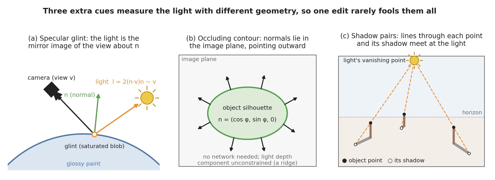
l = 2(n·v)n − v. Each small saturated blob votes for that direction (mean over blobs, weight 0.5), so a reflection of some
other bright object cannot veto the sun.l · (r(p) × r(s)) = 0). Manual, experimental; the basis of the shadow-consistency test in section 14.Each region gets five factors in [0, 1] (enough pixels, curved enough, sharp map, strong directional shading, trustworthy
normals) and their geometric mean as its weight; regions below 0.35 are unreliable and the smallest factor names the reason shown to
the user ("surface too flat", "weak directional shading (overcast?)"). A geometric mean lets any single fatal factor pull the weight down.
F_R(l) = Σ_{j∈R} w_j · ln(ε + A_j(l)) consensus (weighted product of maps), ε = 0.001
l*_{−k} = argmax_l Σ_{j∈R, j≠k} w_j ln(ε + A_j(l)) the light everyone except k agrees on
s_k = −ln(ε + A_k(l*_{−k})) shortfall of region k: 0 = agrees, at most −ln ε ≈ 6.9
S_img = max_k s_k image score
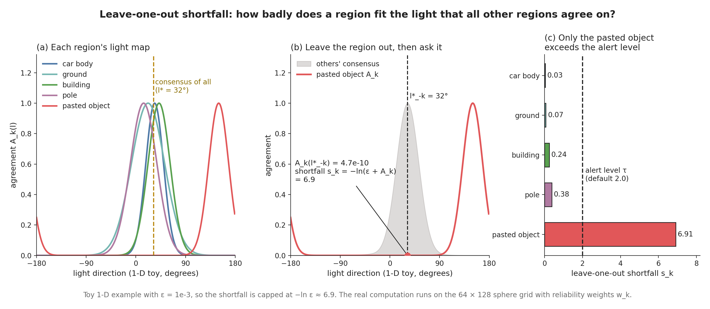
Why leave-one-out: a pasted region inside the consensus would pull it toward itself and hide its own disagreement. Asking
each region how well it fits the light the others agree on removes that self-influence. The score is interpretable:
s_k = 2 means the region's map at the others' light is e^−2 ≈ 0.14 of its own peak.
S_img is at most the alert level τ.τ are candidates. If the remaining reliable regions (at least 2) agree among themselves:
SUSPICIOUS, candidates flagged. Else each candidate is tried alone: if removing just it leaves the rest consistent,
SUSPICIOUS with that region (handles one heavy outlier dragging the others). Else CONFLICT.contrast = P10 / P90 of linear brightness. Under a sun the shaded side is several times
darker; under overcast sky it is not. If the median contrast exceeds a calibrated level (0.42), the verdict is INSUFFICIENT. Needed
because sky light looks like a broad light from above, so the direction test alone would call overcast scenes consistent.All thresholds are set on a separate calibration split; test data never sets a threshold. The alarm level is a split-conformal quantile of the image scores of honest calibration photos:
τ(α) = the ⌈(n + 1)(1 − α)⌉-th smallest score of n honest calibration images
If a new honest image is exchangeable with the calibration set, the chance its score exceeds τ is at most α (5% by
default). This bounds false alarms, not misses, and only within the same kind of photos. Synthetic thresholds turned out several
times too high for real photos, so the marked-area check uses thresholds calibrated on real objects.
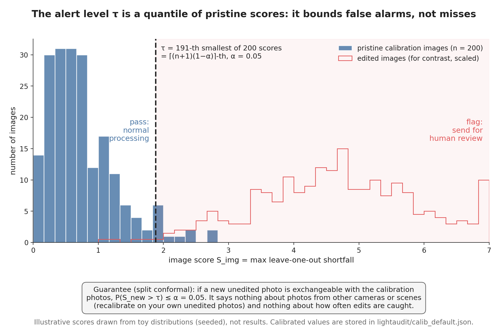
For every region, a monotone (isotonic) curve ĝ maps max(0, n·l*) to brightness under the reference light. This
gives a residual heat map (observed minus predicted, in units of expected noise), a counterfactual image (each region re-shaded to
the brightness the consensus light predicts) and the viewer's albedo-free relighting:
rgb' = rgb · (ĝ(max(0, n·l_user)) + 0.01) / (ĝ(max(0, n·l_ref)) + 0.01)
Optional highlights use Blinn-Phong or the GGX (Cook-Torrance microfacet) model with Smith shadowing and Schlick Fresnel; they are a visual aid only and never enter a score.
A dent is too small and too shallow to estimate a light of its own. For damage we ask a narrower question that fits the insurance case: does the marked area share the light and the paint of the panel around it? The reviewer marks the area; the pipeline adds a ring around it on the same panel.
T = log(RSS at the panel's light / RSS at the area's own best light)Tr = log(RSS shared model / RSS own fit)Paint, dirt and texture change brightness without being shading. Retinex separates them: large brightness gradients are attributed to paint, small ones to shading, and the paint layer is re-integrated with a Poisson solve. Plain Retinex has a fatal flaw here: it reads the brightness step at the paste boundary as a paint edge and removes exactly the evidence we need. The fix is a guard: gradients across the marked area's boundary (a 3-pixel band, because pastes are feathered) are never attributed to paint.
| Paint handling (real objects, shared-material test) | AUC |
|---|---|
| No paint handling | 0.74 |
| Plain Retinex on the composite | 0.66 |
| Retinex guarded at the boundary | 0.82–0.86 |
| Ground-truth reflectance (upper reference) | 0.84 |
The verdict flags the area (SUSPICIOUS) if either test exceeds its own conformal level (half the error budget each), unless the scene is a CONFLICT. Known blind spot: a dent facing away from both lights looks the same under either.
The viewer is where the computer-graphics side of the project is most visible, and it is the main tool for explaining a verdict. It runs in a browser from exported audit bundles, or live against the FastAPI server for uploads.
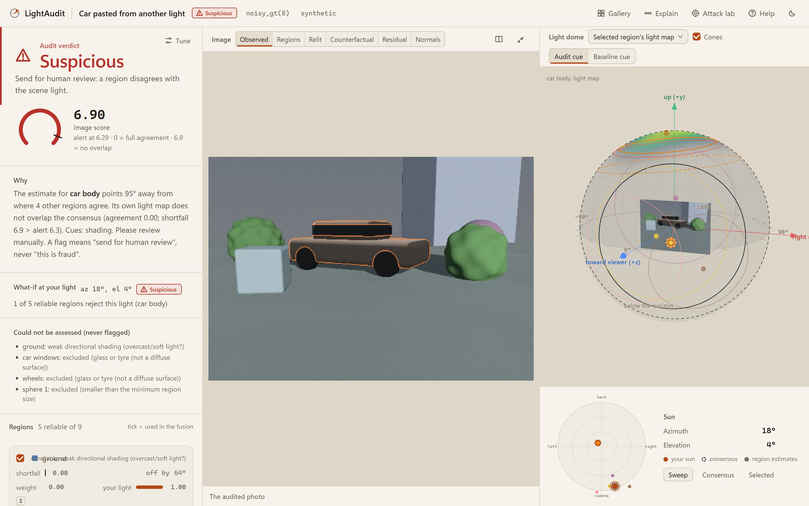
| Test bed | What it is | What it can show |
|---|---|---|
| Synthetic scenes | Our NumPy ray marcher: a car and 2–5 objects on a ground plane, sun + sky light, soft shadows, Blinn-Phong, five tone curves, noise, JPEG. Composites re-render the target under a second light from the same geometry. | Exact ground truth; controlled light angles; attacks |
| MIT Multi-Illumination (real) | Six real indoor scenes, 25 flash directions each, with a grey and a chrome ball | Whole-object splices on real photos (one region taken from another lighting) |
| MIT Intrinsic Images (real) | 20 real curved objects, 10 lamp positions each, ground-truth reflectance | Marked-area splices on real photos (part of an object from another lamp) |
Ten objects calibrate the thresholds; ten other objects are the held-out test (400 clean and 400 pasted images, feathered, 8-bit).
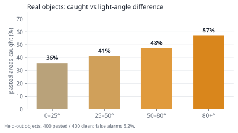
| Operating level | False alarms | Caught |
|---|---|---|
| 10% level | 5.2% | 45.0% |
| 5% level | 2.2% | 33.8% |
| After colour matching (10%) | 5.2% | 31.5% |
By angle at the 10% level: 0–25° 36%, 25–50° 41%, 50–80° 47%, ≥80° 57%. Threshold transfer between halves of the objects is uneven (5% false alarms one way, 10–19% the other): ten objects are few. Per object the range is wide (pear 85% caught but 15% false alarms; box and frog about 23%).
| Case | Result |
|---|---|
| Pasted car, ≥ 30° light difference | AUC 0.65 (rank baseline 0.57); at 90°: 4 of 5 and 6 of 8 caught; clean scenes 0 of 5 flagged |
| Pasted dent (panel check) | 5 of 8 caught; 6 of 8 after re-shade attacks; 0 of 8 after colour matching; dent false alarms 4 of 15 |
| Overcast | 4 of 5 INSUFFICIENT (soft-light check) |
| Two suns | 3 of 5 CONFLICT, 2 of 5 INSUFFICIENT (shadow-level check) |
| Whole car after physics re-shade | 0 of 8 caught |
| Rank vs least-squares shading cue | median light error 21.6–25.8° vs 6.0–7.6° |
| Calibration | coverage of the 68% / 95% sets 0.70 / 0.90; alarm level 6.29 (max ≈ 6.9); 19.5% of clean scenes abstain |
Only the quick suite (10% of the planned sample sizes) has been run; intervals are wide.
The attack lab plays a forger who wants a pasted region to pass, at increasing strength:
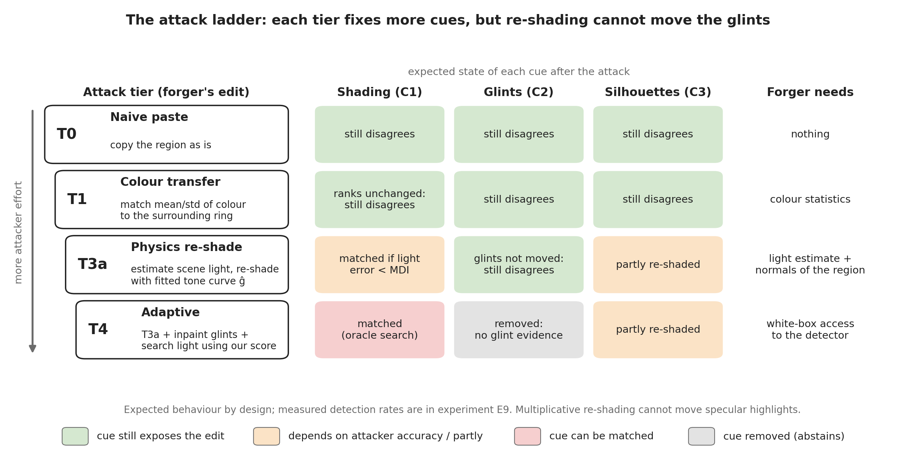
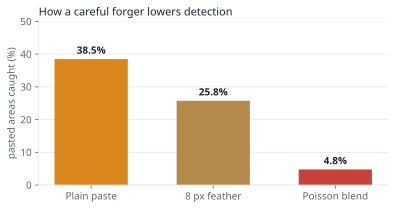
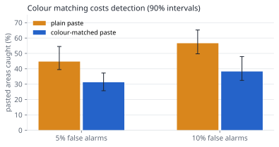
Each idea below was measured before it was kept; these were dropped or kept only as baselines. Reporting them is part of the result.
| Idea | Outcome |
|---|---|
| Rank-correlation shading cue as the main cue | 3× less accurate than least squares; kept as baseline |
| Silhouette cue on by default | No detection gain, slightly more false alarms; off |
| Second-light fit for two suns | AUC 0.65–0.70; replaced by the shadow-level check (0.96) |
| Averaging DSINE and Depth Anything normals | Not better than the better single model |
| Plain Retinex | Hides pastes (AUC 0.66 vs 0.74 without); guarded version kept |
| Gradient-boosted arbiter instead of the rule | Not better; the explainable rule stays default |
| Normal-free boundary "seam" test (Nov 2026) | +10 points on colour-matched pastes at 10% false alarms, but defeated by 4 px feathering (20% → 4%) and 64% false alarms when the marked area is drawn 4 px tight; removed from the verdict |
| Light-colour consistency (illuminant maps) | AUC 0.51–0.53 on the real scenes (all lit by one flash); no signal there |
| Learned intrinsic decomposition (Careaga & Aksoy) instead of guarded Retinex | Never better at matched false alarms (5% level): plain pastes 25% vs 45% caught, colour-matched 14% vs 29%, 8 px feathered 27% vs 36%, Poisson-blended 4% vs 7.5%. The network absorbs the paste edge into paint, like unguarded Retinex. |
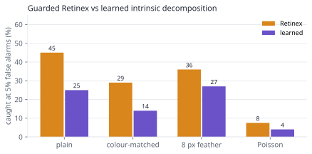
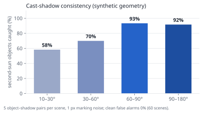
| Slide | Say | Time |
|---|---|---|
| 1 Title | One question: does one light explain this photo? | 0:30 |
| 2 Problem | Edits are cheap; colour matches, light direction does not; reviewers need reasons | 1:00 |
| 3 Answer | Estimate, agree, flag or abstain; four verdicts; flag ≠ fraud | 1:00 |
| 4 Pipeline | Regions, normals, light maps on 8,192 directions, consensus, calibrated verdict | 1:15 |
| 5 Light dome | Each region votes; overlap is consensus; the paste sits 40° apart | 0:45 |
| 6 Dent check | Shared light vs shared material; guarded Retinex 0.74 → 0.86 AUC | 1:00 |
| 7 Results | 45% at 5.2% false alarms; 57% at ≥ 80°; 32% after colour matching | 1:00 |
| 8 Abstention | Overcast and two suns: say "cannot tell" | 0:45 |
| 9 Viewer | Every number inspectable; relight; sky map | 0:45 |
| 10 Limits | Feathering, Poisson, re-shading; whole objects at chance; necessary not sufficient | 1:00 |
| 11–12 Next, close | Shadows, real dents, real cars | 1:00 |
.\.venv\Scripts\python.exe -m lightaudit.cli serve, open http://127.0.0.1:8000.| Graphics concept | Where it appears in LightAudit |
|---|---|
Lambertian reflectance, clamped cosine max(0, n·l) | The shading cue and every light map |
| Inverse rendering | Estimating light from shading, per region |
| Spherical parameterisation, solid angle | The 8,192-direction equirectangular grid with cos(latitude) area weights; credible cones |
| Ray marching signed distance fields | The synthetic scene renderer (sun, sky, soft shadows) |
| Blinn-Phong and GGX / Cook-Torrance | Highlights in the renderer and the viewer's relighting |
Mirror reflection 2(n·v)n − v | The specular-glint cue |
| Projective geometry, vanishing points | Cast-shadow pairs and the shadow-consistency test |
| Camera response, tone curves, gamma | Why the rank cue exists; linearisation; the synthetic camera pipeline |
| Image-based relighting, analysis by synthesis | The relit and counterfactual views (albedo-free ratio relight) |
| Real-time rendering (WebGL2, shaders, three.js) | Relighting shader, 3-D light dome, textured light maps on a sphere |
| Poisson image editing | Retinex re-integration, and the Poisson-blending attack |
| Claim | Number | Source |
|---|---|---|
| Pasted areas caught, real held-out objects, 10% level | 45.0% at 5.2% false alarms | eval/mit_panel.py |
| Same, 5% level | 33.8% at 2.2% | eval/mit_panel.py |
| By light angle (10% level) | 36 / 41 / 47 / 57% (0–25, 25–50, 50–80, ≥ 80°) | eval/mit_panel.py |
| After colour matching | 31.5% at 5.2% | eval/mit_attack.py |
| Guarded Retinex separation | AUC 0.74 → 0.82–0.86 | eval/mit_bench.py |
| Light error with true shape | 1–3° | eval/real_bench.py ball |
| Whole objects in real indoor scenes | AUC 0.49–0.59 (chance) | eval/real_bench.py |
| Overcast / two suns (rendered) | 4 of 5 INSUFFICIENT / 3 of 5 CONFLICT | quick suite |
| Stress test | 38.5% → 25.8% (8 px feather) → 4.8% (Poisson) | eval/seam_robust.py |
| Rank vs least-squares light error | 21.6–25.8° vs 6.0–7.6° | quick suite E1 |
| Shadow consistency (synthetic) | 0 of 60 false alarms; 92–93% at ≥ 60° | eval/shadow_bench.py |
| Tests | 65 pytest + 506 parity checks | pytest, viewer/tests |
Set-ExecutionPolicy -Scope Process Bypass .\setup.ps1 # venv, dependencies, model weights .\.venv\Scripts\python.exe -m pytest # 65 tests node viewer/tests/parity.test.mjs # 506 Python/JS parity checks .\.venv\Scripts\python.exe -m lightaudit.cli serve # viewer at http://127.0.0.1:8000 .\.venv\Scripts\python.exe -m lightaudit.cli calibrate --n-cal 200 .\.venv\Scripts\python.exe -m lightaudit.cli eval --suite quick .\.venv\Scripts\python.exe -m lightaudit.cli audit --image photo.jpg --roi mask.png --html .\.venv\Scripts\python.exe eval/mit_panel.py # real marked-area benchmark (needs data/mit_intrinsic) .\.venv\Scripts\python.exe eval/real_bench.py bench # real whole-object benchmark (needs data/multilum)
Data not in the repository (licences unclear, public repository): MIT Multi-Illumination scenes (eval/real_bench.py fetch N)
and MIT Intrinsic Images (102 MB archive from the University of Toronto). The 12 real-object demo bundles the viewer shows are committed.
Hardware used: a laptop CPU; one real photo with SAM segmentation takes 5–7 minutes.
| Group | Defaults |
|---|---|
| Grid | 128 × 64 = 8,192 directions; coarse 512 for the bootstrap |
| Usable pixels | 0.04 ≤ Y ≤ 0.97, n_z ≥ 0.05, normal uncertainty ≤ 35°, 150–2,500 pixels per region |
| Posterior | 30 block-bootstrap draws, 24 px blocks; KDE h = 14°, T = 1.5 (calibrated) |
| Cues | shading (least squares); glints weight 0.5; silhouette weight 0 (off); shadow pairs 0.7 |
| Reliability | geometric mean of five factors, reliable if ≥ 0.35 |
| Verdict | alert level 6.29 (synthetic, α = 0.05); at least 3 reliable regions; broad consensus if 95% set > 35% of the sphere |
| Scene checks | soft-light contrast 0.42; shadow levels 0.29 |
| Panel check (real) | shared light 0.85, shared material 2.41 (10% level); Retinex guard band 3 px |
| Term | Meaning |
|---|---|
| Surface normal | The direction a surface faces at a pixel |
| Light map / posterior | A region's map over all light directions of how well each explains it |
| Consensus | The light directions most reliable regions accept (product of their maps) |
| Shortfall | How badly a region fits the light the other regions agree on (0 to 6.9) |
| AUC | Probability that a pasted image scores higher than a clean one (0.5 = chance, 1 = perfect) |
| False-alarm rate | Share of honest photos flagged |
| Conformal calibration | Setting the alert level as a quantile of honest scores, giving a false-alarm guarantee |
| Retinex | Separating paint (reflectance) from shading using brightness gradients |
| Panel mode | Auditing a marked area against the panel around it |
| Morph / relighting | Re-shading the photo under a different light using each region's fitted tone curve |
Report generated from the project repository. Photos in the figures: MIT Intrinsic Images (Grosse et al.) and rendered scenes.